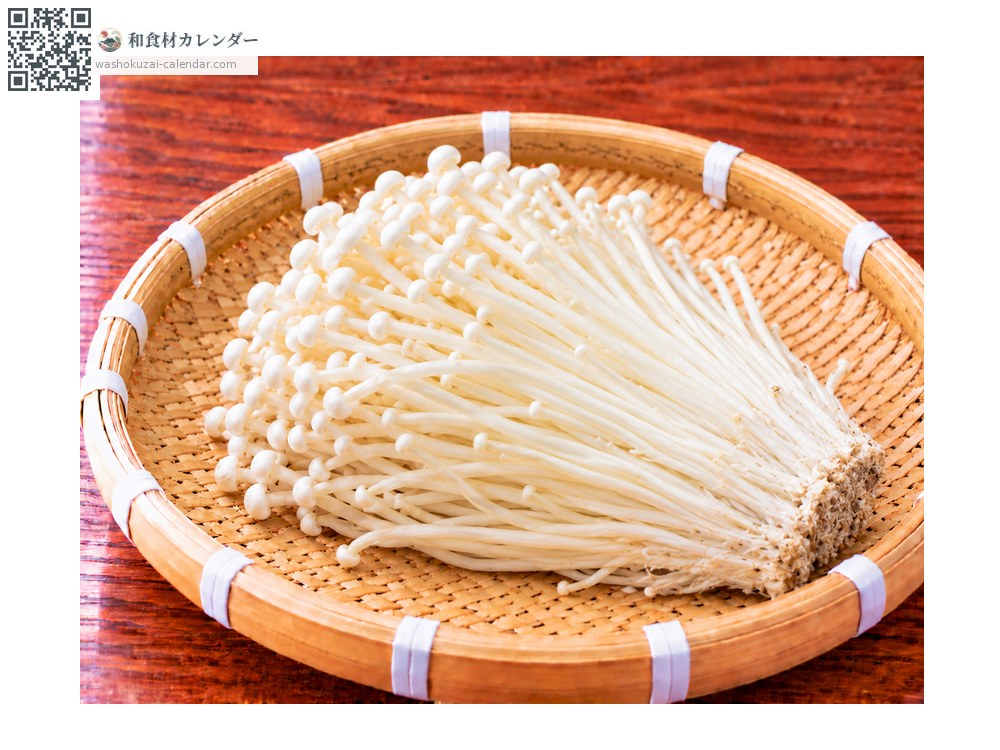
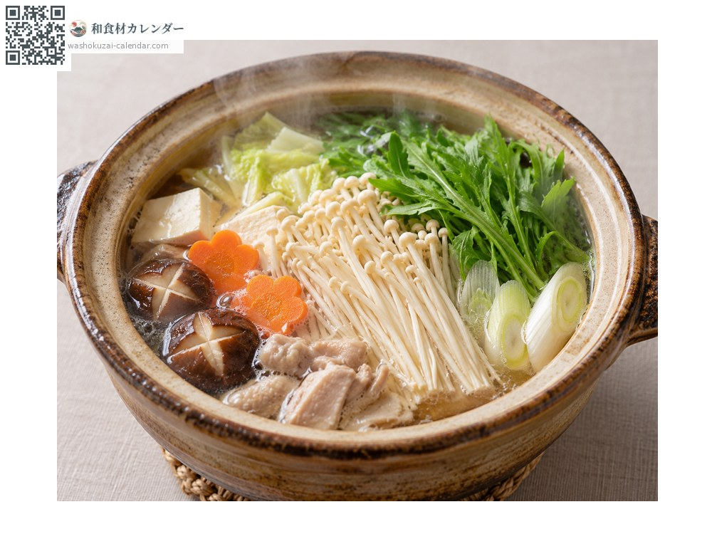
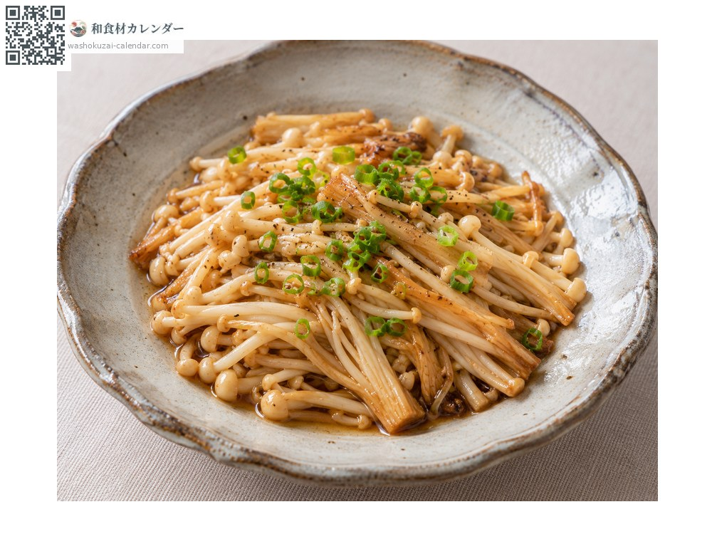
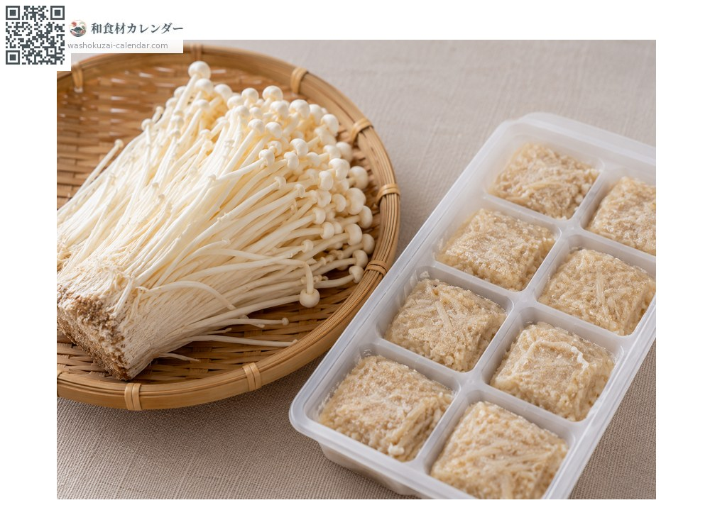
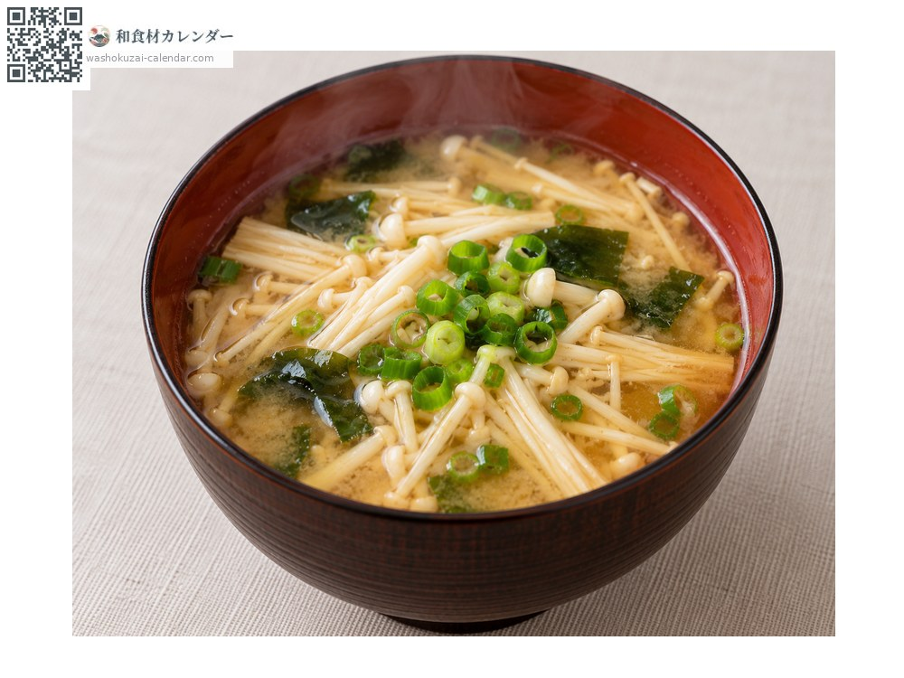

蔬菜
金針菇
えのき えのき enoki
別名enoki、enokidake
當令時期為10月、11月

當令時期
1月
2月
3月
4月
5月
6月
7月
8月
9月
10月
11月
12月
當令有供應
料理方式

火鍋
整束放進去，不要煮過頭才能保住口感。

奶油炒
大火快炒，滴一點醬油。

金針菇冰磚
打碎熬煮後冷凍，鮮味會更濃縮。

味噌湯
很會釋出味道，最後才加。
挑選方式
傘小尚未張開、軸白而直。袋子裡沒有水珠。
保存方式
不要清洗，連袋冷藏。切掉根部撥散後也能冷凍。
主要產地
小知識
店頭那種白而細的是遮光栽培出來的。天然的金針菇呈褐色、傘也較大，外觀完全不同。長野縣的產量佔全國一半以上。